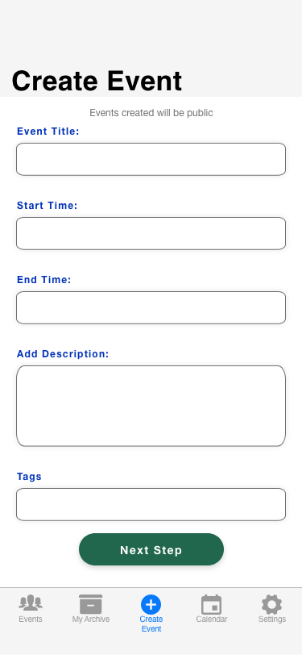
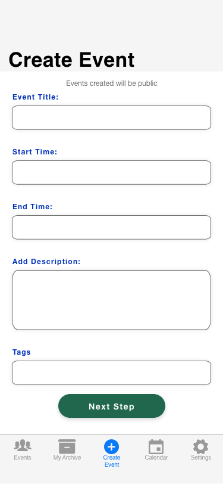
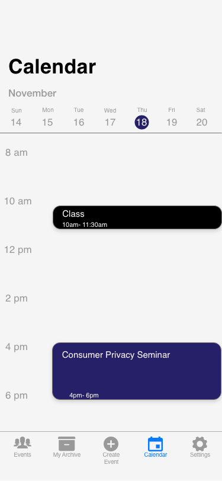
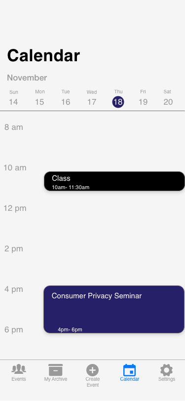

Duration: 14 weeks (Fall 2020)
Project Type: Individual Student Project
Responsibilities: Design Thinking,
Needfinding Interviews, Interaction Design,
Visual Design, User Research
Tools: Pencil and Paper, Mural, Adobe XD,
Apple UI Kit, JustInMind, and Unsplash
Overview: Over the course of the semester,
I developed skills in the design process,
from ideation to digital prototyping.
I conducted some preliminary
research and did need-finding interviews.
I created sketches that I used later to help
design an interactive digital prototype.
The Problem: Current digital tools can make it difficult for current University of Michigan School of Information (UMSI) graduate students to know what events are happening in the college and connect with one another. UMSI students do not have a digital platform that allows for peer-to-peer community building and connecting in one place because normal physical interaction has ceased as a result of COVID-19.
The Goal: To foster a sense of community in UMSI now that physical community events are no longer taking place due to the COVID-19 pandemic. Inspiration: I wanted to focus on current UMSI graduate students because it is an identity that I can relate to. I wanted my solution to be something that I could see myself using.
My Process:
- Problem framing and analysis
- Needfinding interviews
- Storyboards
- Personas
- QOC
- Competitive analysis
- Story map
- Flow chart
- User testing
- Mid-level fidelity prototype (interactive)
My Solution: SI connect is the tool that I designed that allows UMSI grad students to see what social events are happening all in one place and RSVP to attend those events.
Needfinding Interviews:
- Students want to see events relevant to them and their likings
- Events that students may want to attend get lost in their email inbox
- Students may want to attend an event but it doesn’t fit in their schedule and they may not know that right away
Personas
I created three personas and one anti-persona


Sketches
Story Map and Flow Chart


Design Solution
These show some of the main interactions.

 



 
